Jackpot! < Jackpot! >은 2020년 1월 9일 라스베이거스에서 열린 CES 2020에 직접 참여해 느낀 점, 그리고 경험한 것들을 소개하기 위해 작성한 페이지입니다.
기존의 리포트 방식과 달리 저희와 함께 CES에 있는 것 처럼 라스베가스의 일상을담고자 합니다.
에필로그
Jackpot
잭팟
Samsung - Ballie
운이 좋게도 Balli 데모를 눈앞에서 볼 수 있는 기회가 있었다. Ballie는 로봇이나 IoT 라기보다는 살아있는 동물처럼 나를 따라다니는 펫이라는 느낌이 강했다. 손을 내려서 ‘이리 와’라고 했을 때 쪼르르 굴러와서 손에 올라타는 장면을 보면 굉장히 귀여웠고, 만약 이미 판매 중이었다면 당장 구매했을 것 같은 구매 충동도 있었다.
https://youtu.be/Vb5Rigqp3VI
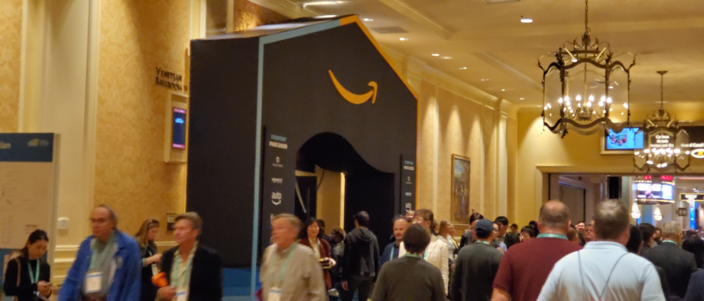
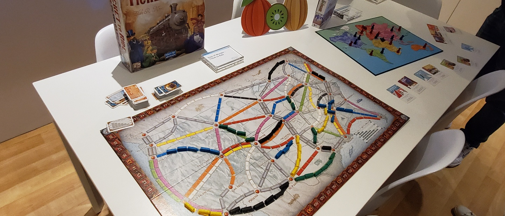
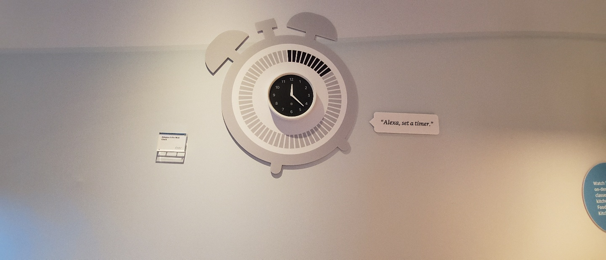
Ballie 데모에서는 Bixby를 활용해서 SmartThings의 기기들과 연동하는 시나리오를 시연하였다. 기존의 제품과는 달리 집안의 집사와 같은 역할을 하는 기기가 되기 때문에 사용자들에게 친근하면서도 기능적으로 유용한 UX를 제공해야 하며 다른 IoT 기기들을 관리하는 역할을 수행할 수 있어야 할 것으로 예상된다. 앞으로 사용자를 따라다니는 로봇과 같은 Things가 등장했을 때의 사용자 경험과 시나리오 대한 고민이 필요한 시점이다.
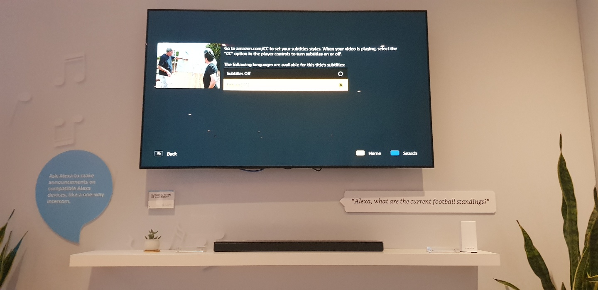
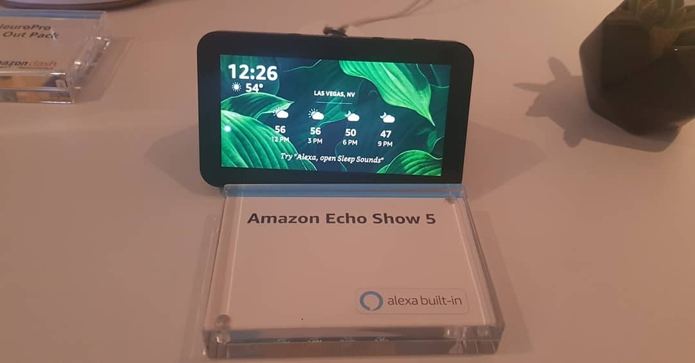
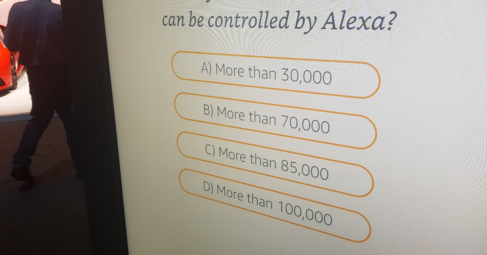
Google - Change of plans
3시간이나 기다려서 보았던 Google의 Interactive zone 이다. 주인공이 식당에서 친구들과 만나는 약속을 가던 중, 식당에서 재료가 떨어졌다는 이야기를 전화로 전해 듣는다. 주인공은 자기가 직접 요리를 하기로 결정을 하고 구글 어시스턴트의 도움을 받아 '식료품점'에서 재료를 사고, 집에서 직접 요리를 해서 친구들을 맞이하는 내용이다.
<영상 1 https://youtu.be/pdDLTln3oM0 >
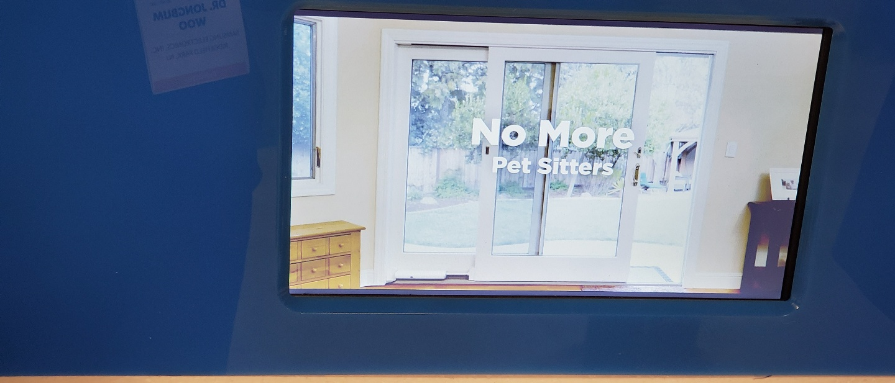
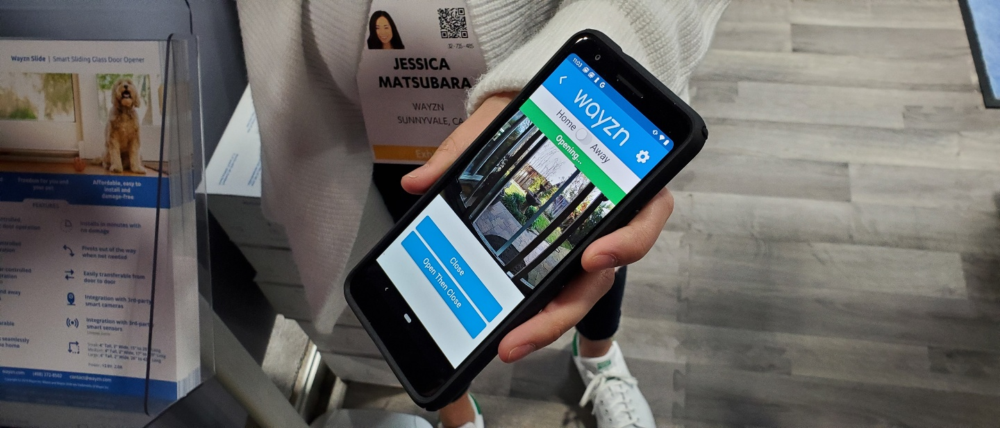
영상은 차를 타고 식당으로 이동하는 곳부터 시작이 된다. 오디오 북을 들으면서 약속장소로 이동하던 중, 'Jen'의 전화를 받게 된다. 식당에 재료가 떨어져서 '브리또' 를 못 먹는다는 것. 그래서 주인공은 식료품점으로 이동하면서 직접 '브리또'를 만들기로 한다. <영상 2 https://youtu.be/pBBRo3oMkiE >
식료품점 앞에 도착을 하여 이전에 요리를 해본적 없는 Kim이 주인공 역할은 하기로 한다. 이전까지는 녹음된 목소리인 줄 알았던 목소리가 Kim을 지목하는 것을 확인하고, 녹음된 목소리가 아닌 성우가 실시간으로 내레이션을 하고 있다는 것을 알게 되었다.
식료품 점에서는 구글 픽셀 4가 카트에 붙어있어서 요리 재료들을 쉽게 확인 가능하였고, Oz로 표현되어 있는 재료들도 구글 어시스턴트에게 물어보아 쉽게 g(그램) 단위로 변환하여 구매가 가능했다. 집으로 출발하기 전 미리 오븐을 예열해 두고, 마지막 장소인 집으로 출발한다.
집에 도착해서는 이제 친구들이 오기 전까지 요리를 마무리 한다. 집에 있는 기기들은 구글 어시스턴트와 연동이 되어있어서 많은 부분에서 도움을 준다. 수도에서 3 컵의 물만 담아주고, 전기밥솥에서 밥을 해주며, 믹스 기도 동작된다. 주인공은 이런 도움을 받아 48단계의 레시피를 완료하고, 친구들을 맞이하게 된다.
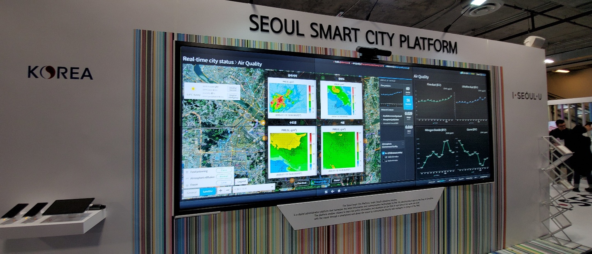
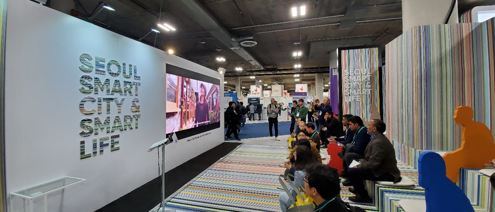
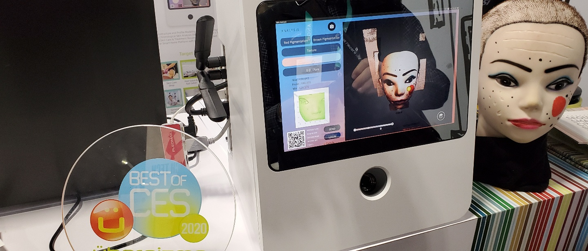
Amazon – 100,000,000 (1억 개)
아마존은 5년 만에 10만 개 이상의 제품들과 연동되고, 현재 1억 개 이상의 제품들이 판매되었다. Google과 마찬가지로 다양한 IoT기기들을 생태계로 흡수하면서 새로운 시나리오들을 소개되었고,
Skill의 형태로 새로운 서비스들을 추가되고 있다. 보드게임을 같이 플레이해주거나 LEGO mindstorm을 춤추게 하거나, 바비큐 그릴에 있는 고기의 상태도 확인하고 앞으로 Skill들이 추가되면서 그 확장 속도는 더욱 빨라질 것으로 예상된다.
구글과 아마존의 IoT 생태계
Amazon과 google IoT 생태계는 놀라울 정도였다. 이미 다양한 IoT 제품들을 생태계 속에 포함시켜 각 기기간의 연계 시나리오들을 시연할 수 있다는 것이 놀라웠다. 생태계가 커지니 생각하지 못했던 시나리오들이 계속 생기는 것처럼 생각되었다. 예를 들어 자동차/마트/수도시설/오븐 이 연결 되어있으니 차를 타고 가면서 레시피를 확인하고, 마트에서 제품을 사면서 오븐을 예열하고, 레시피를 보고 조리하면서 필요한 물을 쉽게 얻을 수 있었다.
사물들이 어디에나 있고 보이스를 통해서 쉽게 컨트롤이 가능하니, 기존의 스마트홈이라는 집안 중심의 시나리오 보다 훨씬 더 확장 가능 하였다. 또 비행택시, 메가시트등의 도시 인프라와 연결되었을 때에는 기존의 패러다임을 벗어난 시나리오들이 그려질 것 같았다. IoT 생태계를 장악 경쟁에서 뒤쳐지지 않으면서 새로운 시나리오에 대한 고려가 필요할 때라고 생각된다.
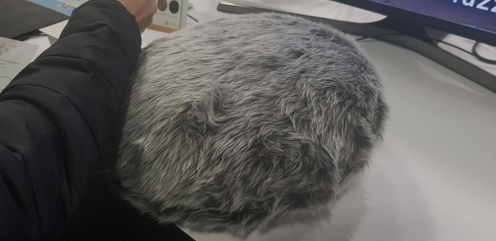
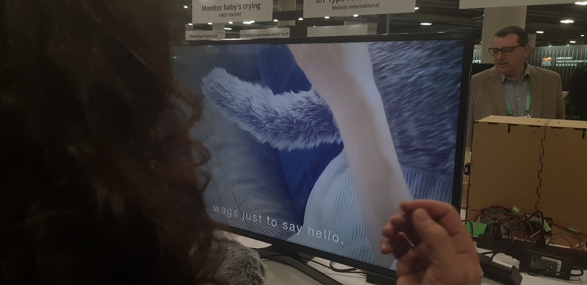
다음 전시자를 위한 팁 1 – 중요한 전시 먼저 관람
굉장히 많은 것을 보고 싶었지만, 짧은 시간과 대기시간, 체력의 한계 등으로 처음 마음 먹은 대로 전시를 둘러보는데 에는 한계가 있었다. 전시장이 굉장히 넓기 때문에 자기가 꼭 봐야할 전시들을 중심으로 구간을 잘 나누어서 관람하는 것이 중요하다. 모든 전시를 본다는 생각을 버리고, 중요한 전시부터 먼저 관람을 하고, 나머지 것을 관람을 해야 된다.
다음 전시자를 위한 팁 2 – 기다리는 것도 다 이유가 있다.
그리고 줄을 서서 기다리는 부스가 많은데, 생각보다 직접 체험을 하는 것이 인상에 많이 남았다. 사람들이 괜히 기다리는게 아니기 때문에 사람들이 많다고 그냥 포지 하지 말고, 중요 한 부스들 (경쟁사)은 기다리든, 사전 신청을 하든 해서 꼭 체험을 해보길 권장한다.
델타 항공에서 체험 할 수 있었던 XO suite를 착용해보지 못해서 매우 아쉬웠다.